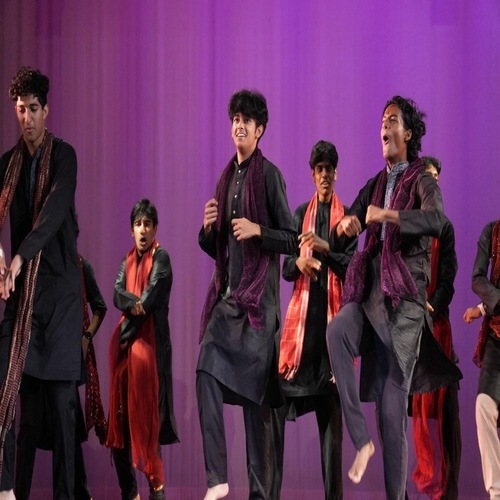
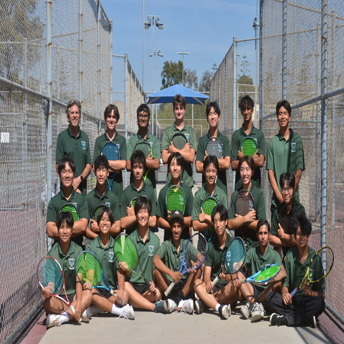
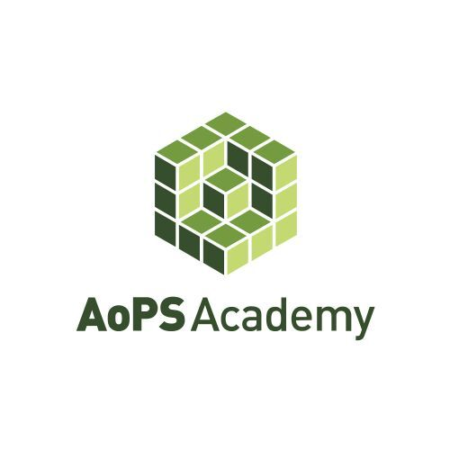
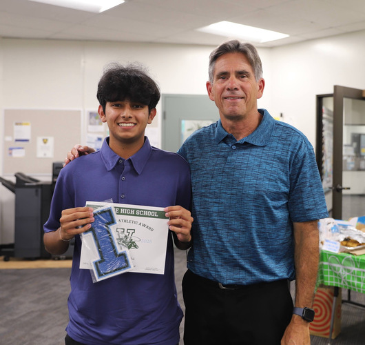
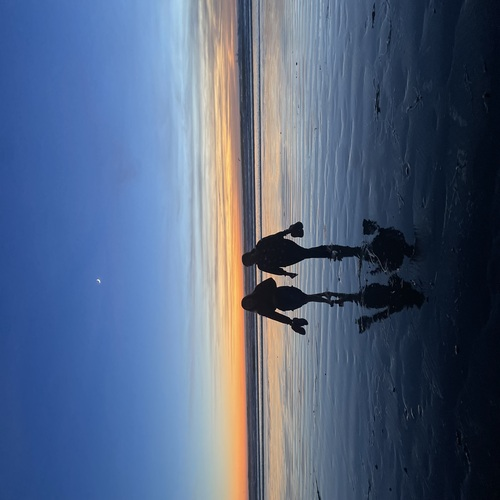

As a pre-business student at UCR, I am passionate about exploring the field of business. Through my involvement in projects and student organizations I have developed skills in leadership and communication, while gaining experience working collaboratively.
With my internship at Epson, I gained exposure to a professional business environment and established a stronger understanding of workplace collaboration and operation. This experience strengthened my interest in how companies use technology, strategic planning, and innovation to remain higher in competitive markets.
I have explored entrepreneurship through Virtual Enterprise, where I contributed to Clarovision, which was a business concept primarily focused on eco-friendly LED holographic displays. The project involved creating a business model for different customers, such as professionals, students, educators, and even creatives. Working on this project guided me to understand the importance of identifying target markets. Additionally, it gave me insight on how different departments come together to build a business.
Beyond just my business experience, I have worked on online projects through RxCellent Med, a non profit organization focused on making medical terminology and resources more accessible to students interested in medicine. I managed data analytics, website development, video producing, branding, and digital content organization. Through this, I developed creative skills while learning how to use digital platforms to communicate information more effectively.
My leadership experience includes acting as a Vice President of the South Asian Student Association, where I helped organize cultural events and collaborated with other schools, sponsors, and venues. This role strengthened my communication, event coordination, and teamwork skills.
In addition, I have also participated in various community service activities. These include food drives, charitable projects, and volunteering activities which support local organizations. These experiences have really helped me reinforce the importance of responsibility, adaptability, and contributing to the community around me.
Moving forward in my life, I hope to gain and deepen my knowledge of finance, supply chain management, and different types of business strategy. I am very interested in understanding how companies optimize their operations, manage their inventory, deal with market changes, and use the newest softwares and technology to improve company efficiency. I am to use my analytical thinking and creativity to contribute to meaningful tasks and develop solutions for the business challenges in the real-world.
• Worked with parents and students to enhance their learning
• Responded to emails regarding the program
• Helped answer calls regarding the program and enrollment
• Responsible for data analytics
• Responsible for reaching a broad audience
• Responsible for Video Production and Website Development
• Acted as a Vice President
• Helped book venues and get sponsors
• Worked with boards of other Orange County Schools
• Hosted indian events such as Diwali, Holi, and Culutre show
• Acted as Team Manager
• Helped players during difficult times
• Helped coach during practice time




